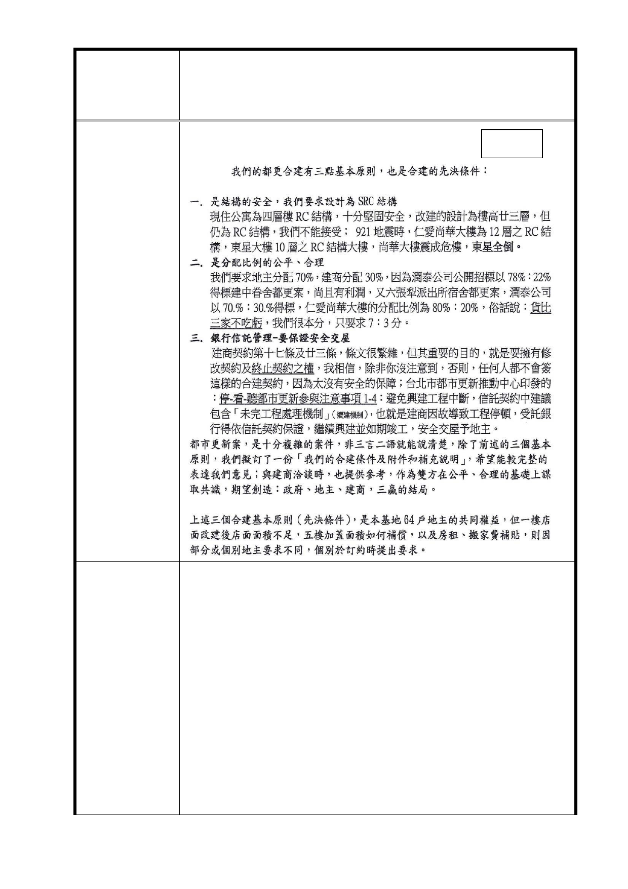

變更臺北市中山區北安段一小段25 、25-1地號等2筆土地第
案 名 三種住宅區、第三之二種住宅區為第三種住宅區（特）、第三
之二種住宅區（特）細部計畫案
附件三
一、 依實施者目前所提設計圖面，為創造良好步行空間、沿
續現有人行步道，北安路現有人行步道將維持通行，並
留設 3 公尺以上無遮簷人行道，含現有人行道達 6 公尺
以上公共退縮開放空間。本案計畫圖面應於事業計畫階
段確定，並經臺北市都市更新及爭議處理審議會、臺北
市府回覆意見
市都市設計及土地使用開發許可審議委員會審議通過
為準。故無法如陳情人所述於事業計畫核定後再規劃。
二、 本案未來以「權利變換計畫」實施，有關地主之分配未
來將由估價師查估所有權人之權利價值比例，並以此計
算所有權人應分配價值與應負擔費用。本府未來將由各
局處幹事、專家學者及審議委員經幹事會、權利變換計
畫審查小組、臺北市都市更新及爭議處理審議會等程序
- 21 -